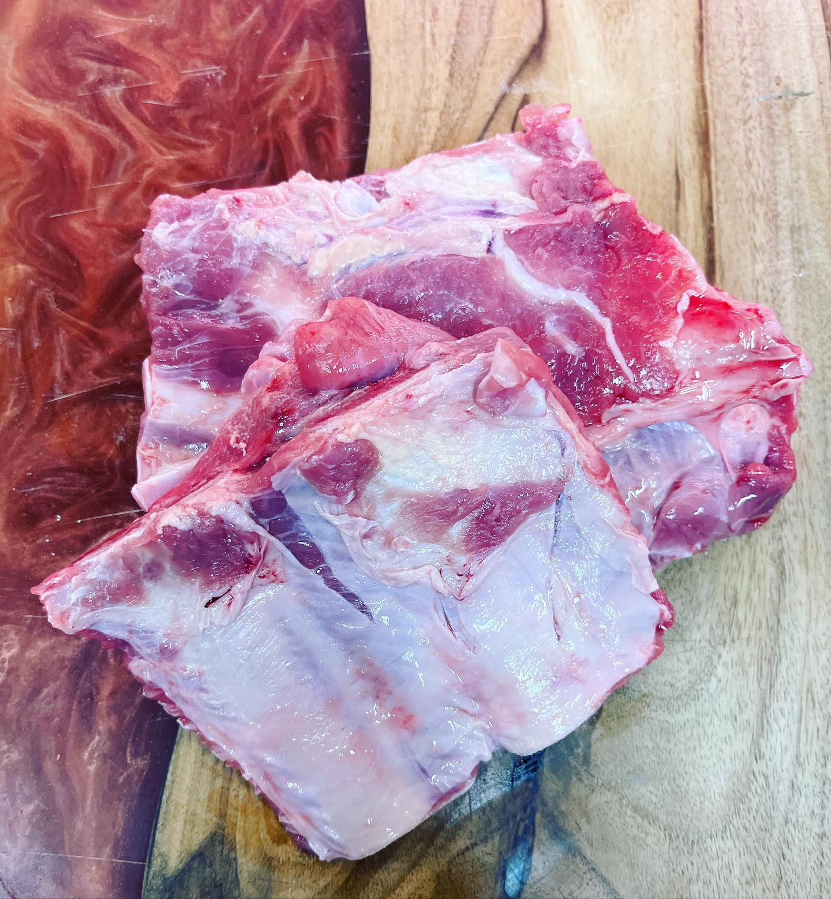

Teľacie mäso podľa @farmhouse.sk — Normy Jedál
Pekný piatok želáme! 🥳
Máte radi teľacie mäsko? Ak áno tak skvelá správa, pretože teľacie mäso patrí k tým diétnejším a veľmi ľahko straviteľným.
Mám pre vás jeden tip na víkend! Pečené teľacie rebrá, stačí vám dobrá marináda a šup do trúby. Odporúčame piecť také 3 hodinky na 150 stupňoch alebo ak máte viac času tak kludne aj 5 hodín na 120 stupňoch. Delikatesa!
Dobrú chuť 🥩🔥
#farmhouse #farmhouseteam #food #meat #calf #butchershop #foodlover #meatlover #calflover #foodinspo #inspiration #foodporn #quality #slovakoroducts #foodcoma #masiarstvo #prsveslovenske #telaciemaso #telacina #jedlo #mason#milujemmaso